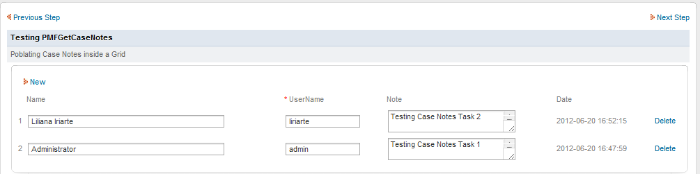
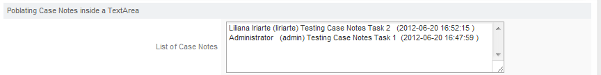
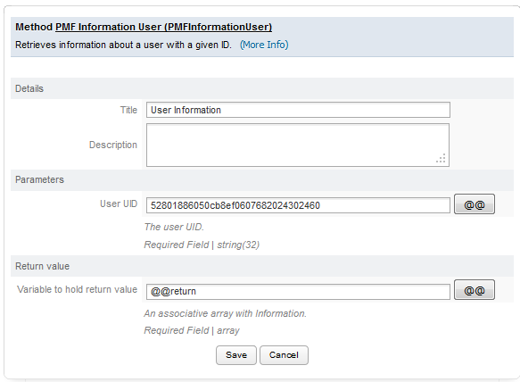

- Overview
- Date Functions
- String Functions
- Database Functions
- Grid Functions
- ProcessMaker Functions
- PMFTaskCase()
- PMFTaskList()
- PMFUserList()
- PMFGroupList()
- PMFRoleList()
- PMFCaseList()
- PMFProcessList()
- PMFSendVariables()
- PMFDerivateCase()
- PMFNewCaseImpersonate()
- PMFNewCase()
- PMFPauseCase()
- PMFUnpauseCase()
- PMFAssignUserToGroup()
- PMFCreateUser()
- PMFUpdateUser()
- generateCode()
- getEmailConfiguration()
- setCaseTrackerCode()
- jumping()
- PMFRedirectToStep()
- PMFSendMessage()
- PMFAddAttachmentToArray()
- PMFgetLabelOption()
- PMFGenerateOutputDocument()
- PMFGetUserEmailAddress()
- PMFGetNextAssignedUser()
- PMFDeleteCase()
- PMFCancelCase()
- PMFAddInputDocument()
- PMFAddCaseNote()
- PMFGetCaseNotes()
- PMFInformationUser()
- PMFRemoveMask()
Overview
ProcessMaker has made a number of its PHP functions available be used in triggers and conditions. These functions are defined in the file workflow/engine/classes/class.pmFunctions.php. Many of these functions are wrappers for internal class methods used by ProcessMaker or in Gulliver, which is the development framework used by ProcessMaker.
Date Functions
formatDate()
formatDate() formats a date string according to a given date format and given language. Note that ProcessMaker stores the input in date fields in DynaForms as strings.
Parameters:
- string date: The input date to be reformatted. The input date must be a string in the format
'yyyy-mm-dd'or'yyyy-mm-dd h:i:s', such as'2015-12-31'or'1998-02-07 22:50:08'. This is the same format used to store dates and datetimes by the MySQL database and datetime fields in DynaForms. - string format: The format of the date which will be returned. It can contain the following codes:
yyyy- shows the year with four numbers (e.g. it shows the year 2008 as2008)yy- shows the year with two numbers (e.g. it shows the year 2008 as08)mm- shows the month with two numbers (e.g. it shows June as06)m- shows the month with a simple number (e.g. it shows June as6)M- shows the word for the month in the selected language (e.g. if the month is June, it showsJunein English andjunioin Spanish)dd- shows the month with two numbers (e.g. the first day of the month is01)d- shows the month with a simple number (e.g. the first day of the month is1)h- shows the hours with two numbers in a 24 hour clock (e.g. 2pm is14)i- shows the minutes with two numbers (e.g. first minute is01)s- shows the seconds with two numbers (e.g. first second is01)
- string language: The language in which to reformat the date. It can be
'en'(English),'es'(Spanish) or'fa'(Persian). If not included, English is set as a default language.
Return value:
- string: It returns the passed date according to the given date format.
Note: For other languages, use PHP's strftime() function. See Formatting Dates in Other Locales.
Examples:
The value of @@textBox will be 'June 11, 2008':
The value of @@textBox will be '7 de Junio del 2008':
The value of @@textBox will be '07/06/08 06:45:04':
(in this example, the language parameter is omitted and English is used by default)
getCurrentDate()
getCurrentDate() retrieves the current date in the format "yyyy-mm-dd", with leading zeros in the month and day if less than 10. This function is equivalent to PHP's date("Y-m-d").
Parameters:
- This function does not need any parameter.
Return value:
- string: It returns the current date as a string value.
Example:
If the current date is December 16, 2009:
The value of @@mytextBox will be '2009-12-16'.
getCurrentTime()
getCurrentTime() returns a string with the current time in the format "hh:mm:ss" with leading zeros when the hours, minutes or seconds are less than 10. The hour is expressed in the 24 hour format (military time) and is a number between 00 and 23. This function is equivalent to PHP's date('H:i:s').
Parameters:
- This function does not need any parameters.
Return value:
- string: The function returns the current time as a string.
Example:
If the current time is 9:13 am, then:
The value of the @@curTime will be '09:13:23'.
literalDate()
literalDate() returns a specified date written out in a given language, (e.g, English: "2008-06-11" returns "June 11, 2008", Spanish: "2008-06-11" returns "11 de Junio de 2008").
Parameters:
- string date: The input date in standard format (yyyy-mm-dd) that is a string.
- string Language: The language to display, which can be 'en' (English) or 'es' (Spanish). If not included, then it will be English by default.
Return value:
The literal date is returned as a string.
Note: For other languages, use PHP's strftime() function. See Formatting Dates in Other Locales.
Example:
The returned value stored in @@textBox will be 'December 17, 2009'.
String Functions
capitalize()
capitalize() converts the first letter in each word into an uppercase letter. Subsequent letters in each word are changed into lowercase letters.
Parameters:
- string textToConvert: The string to capitalize.
Return value:
- string: It returns the introduced text with the first letter capitalized in each word and the subsequent letters into lowercase letters.
Example:
@@phrase2 = capitalize("hElLo wOrLd");
Both @@phrase1 and @@phrase2 will be set to "Hello World".
lowerCase()
lowerCase() returns a string with all the letters converted into lower case letters.
Parameters:
string textToConvert: A string to convert to lower case letters.
Return value:
- The function returns a string with the text converted into lower case letters.
Example:
@@phrase2 = lowerCase('HeLlO WoRlD');
Both @@phrase1 and @@phrase2 will be set to "hello world".
upperCase()
upperCase() returns a string converted into all UPPERCASE letters.
Parameters:
- string textToConvert: A string to convert to UPPERCASE letters.
Return value:
A string converted into UPPERCASE letters.
Example:
@@phrase2 = upperCase('helLO WORld');
Both @@phrase1 and @@phrase2 will be set to "HELLO WORLD".
Database Functions
userInfo()
userInfo() returns an array with the information about a particular registered user in ProcessMaker. This information is stored in the wf_<WORKFLOW>.USERS table.
Parameters:
- string USER_ID: The user's unique ID, which can be found in the following ways:
- Get the UID of the currently logged-in user with the
@@USER_LOGGEDsystem variable or $_SESSION['USER_LOGGED']. - Use the PMFUserList() or WSUserList() functions, or the userList() web service.
- Query the wf_<WORKSPACE>.USERS.USR_UID field in the database with executeQuery().
- Get the UID of the currently logged-in user with the
Return Value:
An associative array with the following keys:
| array( | |
| "username", | The user's username, which is used to login to ProcessMaker. |
| "firstname", | The user's first name. |
| "lastname", | The user's last name. |
| "mail", | The user's email address. |
| "status", | The user's status, which can be 'ACTIVE', 'INACTIVE', or 'VACATION'. Only users with 'ACTIVE' status are allowed to login. |
| "address", | The user's address. If more than one line long, this will contain "\n" (new line characters). |
| "phone", | The user's telephone number. |
| "fax", | The user's fax number. |
| "cellular", | The user's cellular telephone number. |
| "birthday", | The user's birthdate in "YYYY-MM-DD" format. |
| "country", | The user's country. |
| "city" | The user's city. |
| ) |
Note: It is recommended to use the PMFInformationUser() function which returns more complete information than the userInfo() function.
Examples:
1. Look up the phone number of the currently logged in user and assign it to a case variable named @@Phone which will be displayed in a subsequent DynaForm field:
@@Phone = $arrayUser['phone'];
2. Look up the address and city of user whose username is "jdoe":
$result = executeQuery("select USR_UID from USERS where USR_USERNAME='$username'");
$arrayUser = userInfo($result[1]['USR_UID']);
@@Address = $arrayUser['address'] . "\n" . $arrayUser['city'];
Note: The userInfo() function does not return information about the user's region, photo, resume, role, calendar, replacedby, supervisor or department. This information can be looked up by querying the wf_<WORKSPACE>.USERS table with the executeQuery() function, as shown in the example below:
$lang = @@SYS_LANG;
@@userDepartment = '';
@@userSupervisor = '';
@@userRegion = '';
@@userReplacedBy = '';
@@userRole = '';
//look up department name in the current system language:
$query = "SELECT C.CON_VALUE AS DEPT FROM CONTENT C, USERS U WHERE U.USR_UID='$userID' AND
U.DEP_UID = C.CON_ID AND C.CON_CATEGORY='DEPO_TITLE' AND C.CON_LANG='$lang'";
$result = executeQuery($query);
if (is_array($result) && count($result) > 0) {
@@userDepartment = $result[1]['DEPT'];
}
//Look up the user's role, supervisor and who replaces the user
$query = "SELECT USR_ROLE, USR_REPORTS_TO, USR_REPLACED_BY FROM USERS WHERE USR_UID = '$userID'";
$result = executeQuery($query);
if (is_array($result) && count($result) > 0) {
@@userRole = $result[1]['ROL_CODE'];
$aInfo = userInfo($result[1]['USR_REPORTS_TO']);
@@userSupervisor = $aInfo['firstname'] . ' ' . $aInfo['firstname'] . ' (' . $aInfo['username'] . ')';
if (!empty($result[1]['USR_REPLACED_BY'])) {
$aReplace = userInfo($result[1]['USR_REPLACED_BY']);
@@userReplacedBy = $aReplace['firstname'] . ' ' . $aReplace['firstname'] . ' (' . $aReplace['username'] . ')';
}
}
//Look up the user's region (or state):
$query = "SELECT S.IS_NAME FROM USERS U, ISO_SUBDIVISION S WHERE U.USR_UID='$userID' AND U.USR_COUNTRY=S.IC_UID
AND U.USR_CITY=S.IS_UID";
$result = executeQuery($query);
if (is_array($result) && count($result) > 0)
@@userRegion = $result[1]['IS_NAME'];
executeQuery()
executeQuery() executes a SQL statement in a database connection or in one of ProcessMaker's internal databases.
Parameters:
string SqlStatement: The SQL statement to be executed, which must begin with SELECT, INSERT, UPDATE, DELETE, EXECUTE, EXEC, SHOW, DESCRIBE, EXPLAIN or BEGIN. To learn basic SQL syntax, see this tutorial.
Do NOT include the database name in the SQL statement. For example, use"SELECT * FROM USERS", instead of"SELECT * FROM wf_workflow.USERS". SQL key words such are "SELECT" and "WHERE" are case insensitive and can be written as "select" and "Where". If ProcessMaker is installed in Windows, the table and field names in its MySQL databases are also case insensitive by default, but in UNIX/Linux they are case sensitive by default (although this can be changed with the lower_case_table_names setting). If consulting ProcessMaker databases, it is recommended that all table and field names be in UPPERCASE in the SQL statement, so the processes will be exportable between Windows and UNIX/Linux.string DBConnectionUID: Optional. The unique ID of the database connection where the SQL statement will be executed. The unique ID is a string of 32 hexadecimal numbers to uniquely identify database connections, which can be found by opening a process, going to DATABASE CONNECTIONS, and clicking on its Show ID button in the list.
If this parameter is not included, the SQL statement will execute by default in the wf_<WORKSPACE> database of the current workspace, which is named wf_workflow by default. In ProcessMaker 3, each workspace has only 1 database by default, but each workspace upgraded from version 2 will have three databases by default, which can be accessed:'workflow'for the wf_<WORKSPACE> database.'rbac'for the rb_<WORKSPACE> database.'rp'for the rp_<WORKSPACE> database.
Return value:
If executing a SELECT, EXECUTE, EXEC, SHOW, DESCRIBE, EXPLAIN or BEGIN statement, it returns an associative array of associative arrays in the format:
The counting of the outer array starts from 1 (not 0 like a normal PHP array). All field values returned by SELECT statements will be strings, regardless of their original type in the database. In most cases, it is not necessary to explicitly convert the values with type casting, because PHP will gracefully convert integers and floating point numbers automatically if a field value is used in a mathematical operation. Datetime controls in DynaForms treat dates as strings, so date values generally do not need to be converted either.
For INSERT statements, the function returns 1 if the operation was successful; otherwise it returns 0.
For UPDATE and DELETE statements, will return the number of affected rows.
If an error occurs in the database query, it returns a string containing the error message. If an error occurs, subsequent executeQuery() function calls to the same database in the same trigger will not execute correctly.
If the SQL statement starts with unrecognized SQL command, then executeQuery() will return FALSE.
Note: If an error occurred in the SQL query, ProcessMaker will add an @@__ERROR__ variable to the case with the contents "It is not possible to execute the query. Please contact your system administrator", which can be viewed when Debug Mode is enabled.
MySQL's error message will be placed in the @@__ERROR__ variable. Do NOT enable debug_sql in the env.ini file, since it will suppress MySQL error messages.
Example 1:
Lookup information about the logged-in ProcessMaker user:
Note 1:
ProcessMaker system and case variables can NOT be inserted in double quoted strings, like this:
Instead, ProcessMaker system and case variables need to be first assigned to normal PHP variables in order to be inserted inside a double quoted string, like this:
$result = executeQuery("SELECT * FROM USERS WHERE USR_UID='$uid'");
Also note that single quoted strings are treated as literal strings, so PHP variables can NOT be inserted in a single quoted string like this:
Note 2:
String, date and datetime values in SQL queries should be enclosed within single quoted strings, while integer and floating-point values should NOT be enclosed within single quotes. If needing to insert an apostrophe in a string, escape it with a backslash. For example:
Some databases like MySQL will accept double quotation marks in place of single quotation marks around strings and dates, but they are not recommended because it is not part of the SQL standard.
Example 2:
Lookup all the users in a ProcessMaker group named "accounting":
"FROM USERS U, CONTENT C, GROUP_USER GU WHERE " .
"U.USR_UID = GU.USR_UID AND GU.GRP_UID = C.CON_ID AND " .
"CON_VALUE = 'accounting'";
$result = executeQuery($query, 'workflow');
if (is_array($result)) {
#loop to extract the returned rows
foreach ($result as $row)
@@GroupMembers[] = $row['FNAME'] . ' ' . $row['LNAME'];
}
Example 3:
The Unique ID for the database connection is different in each process. If planning to reuse the same same code in multiple processes, this code shows how to look up the unique ID for a database connection external database named "company_data" with the table "clients" at 192.168.2.100. This example also shows how to insert, update and delete records in the database:
$proc = @@PROCESS;
$result = executeQuery("SELECT DBS_UID FROM DB_SOURCE WHERE PRO_UID='$proc' " .
"AND DBS_DATABASE_NAME='company_data' AND DBS_SERVER='192.168.2.100'");
if (!is_array($result) or count($result) == 0)
die("Error: Unable to lookup UID for database 'company_data'!");
$db = $result[1]['DBS_UID'];
$query = "INSERT INTO CLIENTS (FNAME, LNAME, COMPANY) VALUES ('Jane', 'Doe', NULL)";
if (executeQuery($query, $db) == 0)
@@dbError = "Unable to insert record into company_data.client table";
$query = "UPDATE CLIENTS SET COMPANY='Acme Inc.' WHERE FNAME='Jane' AND LNAME='Doe'";
if (executeQuery($query, $db) == 0)
@@dbError = "Unable to update the company_data.CLIENTS table";
$query = "DELETE FROM CLIENTS WHERE FNAME='Jane' AND LNAME='Doe'";
if (executeQuery($query, $db) == 0)
@@dbError = "Unable to delete record in company_data.client table";
Example 4:
In this example, executeQuery() is used to look up the next available case to which the logged in user is assigned. If a case is found, then the web browser will automatically be redirected to that case with the G::header() function, otherwise the browser will be redirected to the Case List page. Before redirecting the browser, the current task is automatically routed to the next task in the process with PMFDerivateCase(). This trigger code can be added after the last step in the task, to avoid the user having to see the screen which displays the next assigned user and clicking "Continue".
$query = "SELECT APP_UID, DEL_INDEX FROM APP_DELEGATION " .
"WHERE USR_UID = '$userId' AND DEL_THREAD_STATUS = 'OPEN' " .
"ORDER BY DEL_DELEGATE_DATE DESC";
$queryResult = executeQuery($query);
if (is_array($queryResult) && count($queryResult) > 0)
$caseURL = 'cases_Open?APP_UID=' . $queryResult[1]['APP_UID'] .
'&DEL_INDEX=' . $queryResult[1]['DEL_INDEX'];
else
$caseURL = 'cases_List';
//Route the current case to the next task in process:
PMFDerivateCase(@@APPLICATION, @%INDEX);
//Redirect the web browser to a new location:
G::header("location: $caseURL");
die();
Other examples:
For an example using executeQuery() to access information about DynaForm file objects and write files to a database, see Accessing Files with PHP. For an example using executeQuery() to populate a grid, see Accessing Grids with PHP.
Grid Functions
orderGrid()
orderGrid() sorts a grid according to a specified field in ascending or descending order.
Parameters:
- array gridName: A grid, which is a numbered array containing associative arrays with field names and their values, it has to be set like this "@=".
- string field: The name of the field by which the grid will be sorted.
- string criteria: Optional parameter. The order which can either be 'ASC' (ascending) or 'DESC' (descending). If not included, 'ASC' will be used by default.
Note: The result of this function has to be saved in a Grid in order to see the sorted information, it can be in the same grid or in another grid.
Example:
If your grid is like this:
Then sort the grid by the 'firstname' field:
The result will be the following grid:
evaluateFunction()
evaluateFunction() executes a function on each row in a grid, using the grid fields in operations such as + (addition), - (subtraction), * (multiplication), / (division), and % (remainder). The formula can also use ( ) to group together operations.
Parameters:
grid gridName: The input grid.string Expression: The input expression for the operation among grid fields. The expression always must be enclosed within double quotes, otherwise a fatal error will occur.
Return Value:
This function returns an associative array of associative arrays, which is how grids are internally stored in ProcessMaker.
Example:
The following function is executed, which subtracts the 'salary' field from the 'discount' field in each row and assigns the result to the 'total' field:
The result will be the following grid:
ProcessMaker Functions
These ProcessMaker Functions are generally named PMF...() and are designed to control ProcessMaker from inside a trigger. These functions are executed with the permissions of the currently logged-in user who is running the case.
If needing to execute these functions as a different user, use the corresponding WSDL Web Services or REST endpoints.
PMFTaskCase()
PMFTaskCase() returns all the tasks for the specified case which have open delegations.
Parameters:
- string caseId: The unique ID for a case.
Return Value:
A list of tasks, with the following structure:
Where:
- string guid: The unique ID of a task.
- string name: The name of a task.
Example:
PMFTaskList()
PMFTaskList() returns a list of tasks which the specified user has initiated.
Parameters:
- string userId: The unique ID of a user.
Return value:
An array of tasks, with the following structure:
Where:
- string guid: The unique ID of a task.
- string name: The name of a task.
Example:
PMFUserList()
PMFUserList() returns a list of users whose status is set to "ACTIVE" for the current workspace.
Parameters:
None.
Return Value:
An array of users, with the following structure:
Where:
- string guid: The unique ID of a user.
- string name: The username of a user.
Example:
PMFGroupList()
PMFGroupList() returns a list of groups in the current workspace.
Parameters:
None.
Return Value:
An array of groups, with the following structure:
Where:
- string guid: The unique ID of a group.
- string name: The name of a group.
PMFRoleList()
PMFRoleList() returns a list of all the roles in the current workspace.
Parameters:
- None.
Return Value:
- This function returns an array of roles, with the following structure:
Where:
- string guid: The unique ID of a role.
- string name: The name of a role.
Example:
//Counting in the array starts from 1
@@RoleName = $GRID_ROLES[1]['name'];
PMFCaseList()
PMFCaseList() returns a list of the pending cases (i.e., cases which have a status of "To Do" or "Draft") for a specified user. Note that the specified user must be designated to work on the current task for these cases.
Parameters:
- string userId: The unique ID of a user who is assigned to work on the cases.
Return Value:
A list of cases, with the following structure:
Where:
- string guid: The unique ID for a case.
- string name: The label of a case.
- string status: The status of a case.
- int delIndex: The current delegation index.
Example:
PMFProcessList()
PMFProcessList() returns a list of processes for the current workspace.
Parameters:
None.
Return Value:
An array of associative arrays which contain the unique ID and title of processes. The array has the following structure:
Where:
- string guid: The unique ID for a process.
- string name: The process title.
Example:
PMFSendVariables()
PMFSendVariables() sends an array of case variables to a specified case. These variables are stored in the wf_<WORKSPACE>.APPLICATION.APP_DATA field and can be displayed by any subsequent DynaForm which has a field name which is the same as the case variable name.
Parameters:
- string caseId: The unique ID of the case to receive the variable. Note that the case ID changes with each new task in the process. To send variables to the current case, use the system variable
@@APPLICATION. - array variables: An associative array to hold the case variables to send to the case. The keys are the case variable names and the values are the values of the case variables.
Return Value:
Returns 1 if the variables were sent successfully to the case; otherwise, returns 0 if an error occurred.
Example:
PMFSendVariables(@@APPLICATION, $aData);
PMFDerivateCase()
| Warning: Please, take into consideration that this function is NOT supported in ProcessMaker Mobile. It will be available in future versions. |
PMFDerivateCase() derivates (routes) a case to the next task in the process.
Parameters:
- string caseId: The unique ID for the case to be routed, which can be found with PMFCaseList() or by querying the field wf_<WORKSPACE>.APPLICATION.APP_UID. The case UID for the current case is stored in the system variable
@@APPLICATION. - int delegation: The delegation index for the task to be routed. The delegation index for the current case is stored in the system variable
@%INDEX. Note that the delegation index changes with each new task in the case, so lookup the index before calling this function. - boolean executeTriggersBeforeAssigment: Optional parameter. By default is set as
false. If set totrue, any triggers which are set to be fired before the case is assigned to the next user will be fired before routing the case. It is not recommended to set the value as true otherwise the function will generate an infinite loop. On the other hand, if this value is set asfalsethe trigger will be executed before assignment . - string userUID: Optional parameter. The unique ID of the user who is assigned to the task indicated by the
delIndex number, which should be an open task. If not included or set tonull, then it will be set to the unique ID of the current logged-in user.
Return Value:
Returns 1 if new case was routed successfully; otherwise, returns 0 if an error occurred.
Note 1:
If this function is called for the current task when running a case, then the case to be routed twice--once by PMFDerivateCase() and the second time by the interface running the case. To work around this problem, call the die() function after PMFDerivateCase() to stop the processing and prevent the second derivation (routing). However, if die() is called after a DynaForm step, then it will stop the DynaForm data from getting committed to the database. In this case, use PMFSendVariables() to save the data to the database before calling PMFDerivateCase and die(). See the example below.
Note 2:
This function only works if the currently logged in user is assigned to the task indicated by the delegation parameter. If needing to route/derivate a task which is assigned to another user, login as that user with web services and use routeCase() instead of PMFDerivateCase(). See this code example for routing past the next task in the current case.
Note 3:
The PMFDerivateCase() function can only route tasks which exist in the wf_<WORKSPACE>.APP_DELEGATION table and whose status is 'OPEN'. In other words, this function can't be called on past tasks which are already closed and future tasks which don't yet exist. To route the next task in the case, which doesn't yet exist, see Skipping the Next Task in a Case.
Example 1:
Route the current case onto the next task in the process and redirect the web browser back to Home > Inbox to see the cases list:
Example 2:
To route on a case immediately after a DynaForm step, the data from the DynaForm variables needs to be stored in the database with PMFSendVariables() before calling die(). For example, the DynaForm contains the variables "firstName", "lastName", "address" and "telephone" which need to be saved.
Note: If the trigger is set before the next step (or before assignment if the last step in the task), then it is not necessary to call PMFSendVariables() because the variables from the DynaForm will have already been saved to the database.
Example 3:
To avoid having to click on the Continue button at the end of a task, create the following trigger which is set before assignment:
If the next task is assigned to the same user as the current task, then it can be opened directly without going to the Inbox. Create the following trigger and set it to execute after routing:
PMFNewCaseImpersonate()
PMFNewCaseImpersonate() creates a new case with a user who can impersonate a user with the proper privileges. This function allows any user to create a new case and assign it to another user.
Parameters:
- string processId: The unique ID of the process.
- string userId: The unique ID of the user.
- array variables: An associative array of the variables which will be sent to the case. The keys are the variable names and the values are the values of the case variables. If no variables are needed, then set to an empty array: array()
- string taskId: The unique ID of the task where the case will start. Available in version 2.5.1 and later.
Return Value:
Returns 1 if new case was created successfully; otherwise, returns 0 if an error occurred.
Example:
PMFNewCaseImpersonate(@@PROCESS, @@USER_LOGGED, $aData);
PMFNewCase()
PMFNewCase() creates a new case starting in the specified task.
Parameters:
- string processId: The unique ID of the process, which can be found in the following ways:
- Use the
@@PROCESSsystem variable to get the unique ID of the current process. - Use the PMFProcessList() function or processList() web service.
- Query the wf_<WORKSPACE>.PROCESS.PRO_UID field in the database or use a query like:
- Use the
- SELECT CON_ID FROM CONTENT WHERE CON_CATEGORY='PRO_TITLE' AND CON_VALUE='Expense Report Process'
- string userId: The unique ID of the user, which can be found in the following ways:
- Use the @@USER_LOGGED system variable for the unique ID of the currently logged-in user.
- Use the PMFUserList() function or userList() web service.
- Query the wf_<WORKSPACE>.USERS.USR_UID field in the database.
- string taskId: The unique ID of the task, which can be found in the following ways:
- Use the
@@TASKsystem variable for the unique ID of the current task. - Use the PMFTaskList() function or taskList() web service.
- Query the wf_<WORKSPACE>.TASK.TAS_UID field in the database or get the starting task of the current process with the following query:
- Use the
- executeQuery("SELECT TAS_UID FROM TASK WHERE PRO_UID='" .@@PROCESS . "' AND TAS_START='TRUE'")
- array variables: An associative array of the variables which will be sent to the case. The keys are the variable names and the values are the values of the case variables. If the case variable is a grid, then set the value to an associate array of associative arrays. See Example 3 below. If no variables are needed, then set to an empty array: array()
Return Value:
If an error occurred, it returns zero. Otherwise, it returns a string with the case UID of the new case.
Note:
The status of the new case will automatically be set to "DRAFT". To change the status so the new case will appear in the user's inbox (instead of the draft box), set the value of the wf_<WORKSPACE>.APPLICATION.APP_STATUS field to "TO_DO". See Example 1 below.
Example 1:
Create a new case in the current process, designating the current user to work on the new case. The starting task ID is hard coded in the trigger code and no case variables are set in the new case. After creating the new case, change its status from "DRAFT" to "TO_DO".
$newCaseId = PMFNewCase(@@PROCESS, @@USER_LOGGED, $taskId, array());
//if a new case was created, change its status in the database
if ($newCaseId) {
executeQuery("UPDATE APPLICATION SET APP_STATUS='TO_DO' WHERE APP_UID='$newCaseId'");
}
else {
$msg = "Unable to create new case." . isset(@@__ERROR__) ? @@__ERROR__ : '';
$g = new G();
$g->SendMessageText($msg, 'ERROR');
}
Example 2:
Look up the ID of a process named "Expense Report Process" and its starting task. Then, lookup all the users who are assigned to that starting task and randomly choose one to assign to the new case. Set the values of case variables named "Model", "Price" and "OrderDate" in the new case.
$result = executeQuery("SELECT CON_ID FROM CONTENT WHERE
CON_CATEGORY='PRO_TITLE' AND CON_VALUE='Expense Report Process'");
$processId = $result[1]['CON_ID'];
//Look up the UID of the starting task for the process:
$result = executeQuery("SELECT TAS_UID FROM TASK WHERE PRO_UID='$processId' AND TAS_START='TRUE'");
$taskId = $result[1]['TAS_UID'];
//Randomly choose a user from the list of assigned users for the starting task:
$aUsers = executeQuery("SELECT USR_UID FROM TASK_USERS WHERE TAS_UID='$taskId' AND TU_TYPE='1'");
//get random number to select the user:
$noUser = rand(1, count($aUsers));
$userId = $aUsers[$noUser]['USR_UID'];
//Create an associative array of case variables named "Model", "Price" and "OrderDate":
$aData = array('Model' => 'Acme Coyote Trap', 'Price' => 29.99, 'OrderDate' => '2010-12-31');
PMFNewCase($processId, $userId, $taskId, $aData);
Example 3:
Start a new case, setting a grid case variable named "clientsGrid" which has the fields "firstName", "lastName" and "telephone" and has 3 rows of data:
$aGrid = array(
"1" => array("firstName" => "Greg", "lastName" => "Brown", "telephone" = "471.826-4329"),
"2" => array("firstName" => "Anne", "lastName" => "Smith", "telephone" = "913.626-9518"),
"3" => array("firstName" => "Sally", "lastName" => "Slim", "telephone" = "765.652-8608")
);
$newCaseId = PMFNewCase(@@PROCESS, @@USER_LOGGED, $taskId, array("clientsGrid" => $aGrid));
PMFPauseCase()
PMFPauseCase() pauses a specified case.
Parameters:
- string caseUid: The unique ID of the case, which can be found in the following ways:
- Use the
@@APPLICATIONsystem variable to get the unique ID of the current case. - Use PMFCaseList(), WSCaseList(), or the caseList() web service.
- Use the
- string delIndex: The delegation index of the current task in the case. For the current case, use the system variable
@%INDEX. - string userUid: The unique ID of the user who will pause the case. The user's unique ID, which can be found in the following ways:
- Get the UID of the currently logged-in user with the
@@USER_LOGGEDsystem variable or$_SESSION['USER_LOGGED']. - Use the PMFUserList() or WSUserList() functions, or the userList() web service.
- Query the wf_<WORKSPACE>.USERS.USR_UID field in the database with executeQuery().
- Get the UID of the currently logged-in user with the
- string unpauseDate: Optional parameter. The date in the format
"YYYY-MM-DD"indicating when the case will be unpaused. Ex:"2015-12-31"
Return Value:
Returns 1 if the case is paused successfully; otherwise, returns 0 if an error occurred.
PMFUnpauseCase()
PMFunpauseCase() unpauses a specified case.
Parameters:
- string caseUid: The unique ID of the case, which can be found in the following ways:
- Use the
@@APPLICATIONsystem variable to get the unique ID of the current case. - Use the caseList() web service.
- Use the
- string delIndex: The delegation index of the current task in the case. For the current case, use the system variable
@%INDEX. - string userUid: The unique ID of the user who will unpause the case, which can be found in the following ways:
- Get the UID of the currently logged-in user with the
@@USER_LOGGEDsystem variable or $_SESSION['USER_LOGGED']. - Use the PMFUserList() or WSUserList() functions, or the userList() web service.
- Query the wf_<WORKSPACE>.USERS.USR_UID field in the database with executeQuery().
- Get the UID of the currently logged-in user with the
Return Value:
Returns 1 if the case is unpaused successfully; otherwise, returns 0 if an error occurred.
PMFAssignUserToGroup()
PMFAssignUserToGroup() assigns a user to a group. Note that the logged-in user must have the PM_USERS permission in his/her role to be able to assign a user to a group.
Parameters:
- string userId: The unique ID of the user.
- string groupId: The unique ID of the group.
Return Value:
Returns 1 if the user was successfully assigned to the group; otherwise, returns 0 if an error occurred.
Example:
$var = PMFAssignUserToGroup(@@USER_LOGGED, $GroupUID);
if($var == 0)
@@text = "It was not assigned";
else
@@text = "It was assigned";
Where:
$GroupUID: It is the ID of the employee group.@@USER_LOGGED: This is the user logged ID.$var: As this function returns 1 if it was successfully assigned and 0 if not, this variable store this return value to confirm the assignation.
PMFCreateUser()
PMFCreateUser() creates a new user with the given data.
Parameters:
- string username: The username of the new user.
- string password: The password of the new user, which can be up to 32 characters long. For more information, see Customizing Authentication.
- string firstname: The first name of the user, which can be up to 50 characters long.
- string lastname: The last name of the user, which can be up to 50 characters long.
- string email: The email of the new user, which can be up to 100 characters long.
- string role: The role of the new user, such as
'PROCESSMAKER_ADMIN','PROCESSMAKER_OPERATOR'or'PROCESSMAKER_MANAGER'.
Return Value:
- Returns 1 if the new user was created successfully; otherwise, returns 0 if an error occurred.
Example:
if ($var == 0)
@@text = 'not created';
else
@@text = 'created';
PMFUpdateUser()
PMFUpdateUser() updates a specified user’s information.
Parameters:
- string userId: The unique ID of the user whose information will be updated.
- string userName: The username of the user.
- string firstname: The first name of the user which can be up to 50 characters long.
- string lastname: The last name of the user which can be up to 50 characters long.
- string email: The email of the user, which can be up to 100 characters long.
- string dueDate: The expiration date which must be a string in the format "YYYY-MM-DD"
- string status: The user's status, such as
'ACTIVE','INACTIVE'or'VACATION'. - string role: The role of the user, such as
'PROCESSMAKER_ADMIN','PROCESSMAKER_OPERATOR'or'PROCESSMAKER_MANAGER'. - string password: The password of the user, which can be up to 32 characters long. For more information, see Customizing Authentication.
Note: All fields must be filled.
Return Value:
- Returns 1 if the user has been successfully updated; otherwise, returns 0 if an error occurred.
Example:
'ACTIVE', 'PROCESSMAKER_OPERATOR', 'p4ssw0rd');
generateCode()
generateCode() creates a random string of letters and/or numbers of a specified length, which can be used as the PINs (public identification numbers) and codes for cases. For more info, see setCaseTrackerCode().
Parameters:
- int size: The number of characters to be generated.
- string type: The type of of characters to be generated, which can be 'ALPHA' (only letters), 'NUMERIC' (only numbers), and 'ALPHANUMERIC' (both letters and numbers).
Return Value:
The generated string of random characters.
Note: There is no checking whether the string returned by generateCode() is unique, so do not use this function to uniquely identify any object in ProcessMaker.
Example:
To create a random string like "4NJQEWPT89AH":
getEmailConfiguration()
getEmailConfiguration() returns information about the current email configuration.
Return Value:
Returns an associative array with the following information about the email configuration:
| array( | |
| "MESS_PASSWORD", | Encrypted password to login to the email server, such as: "vKbAqYO+urusxc6+xbp+eIF9" |
| "MESS_PASSWORD_HIDDEN", | Always set to "" (empty string. |
| "MESS_ENABLED", | Set to "1" if email notifications are enabled. If not enabled, set to "0". |
| "MESS_ENGINE"], | The email engine which can be "PHPMAILER" to use the PHPMailer program which supports SMTP or "MAIL" to use PHP's mail() function to send the email via the mail transfer agent configured for the ProcessMaker server. |
| "MESS_SERVER", | The IP number or domain name of the email server, such as: "smtp.mail.yahoo.com" |
| "MESS_RAUTH", | Set to true if login needed to send out messages; otherwise set to false. |
| "MESS_PORT", | Port number of the email server, such as "25", "465" or "587". |
| "MESS_ACCOUNT", | The username of the email account. For some email servers, such as gmail, the account name included the full email address, such as:"joedoe@gmail.com" |
| "MESS_BACKGROUND", | HTML code for the background to the email message. Generally set to "" (no background). |
| "MESS_EXECUTE_EVERY", | Time between attempts to send message. If set to "", then uses the default. |
| "MESS_SEND_MAX", | Maximum number of attempts to send the message. If set to "", then uses the default. |
| "SMTPSecure", | The type of secure connection to the email server: "ssl", "tls" or "" (empty string for no secure connection) |
| "MAIL_TO", | Email address to whom the test email will be sent. |
| "MESS_FROM_NAME", | Name of the sender, such as: "ProcessMaker Admin" |
| "MESS_TRY_SEND_INMEDIATLY", | Set to "1" to send out a test email after configuring email server or "false" to not send it. |
| "MESS_FROM_MAIL", | Email address of the sender of emails. In most cases this will be the same as the email account. |
| ) |
Example:
Check whether email notifications are enabled before sending out an email with PMFSendMessage():
if ($aEmailConfig['MESS_ENABLED'] == "1"){
PMFSendMessage(@@APPLICATION, 'accountant@acme.com', 'manager@acme.com', '', '', 'Accounting report', 'accountingTemplate.html');
}
setCaseTrackerCode()
setCaseTrackerCode() sets the code and PIN for a case, which are used when an unregistered user logs into the Case Tracker to view the details of a particular case. By default, the code for a case is its case number and its PIN (public identification number) is a semi-random string of 4 characters (numbers and letters) which is autogenerated by ProcessMaker, however, setCaseTrackerCode() can set the case code and PIN to any desired values.
Parameters:
- string caseId: The unique ID for a case. For the current case use the system variable
@@APPLICATION. Other cases UIDs can be found with PMFCaseList(), WSCaseList(), caseList() or by querying the field wf_<WORKSPACE>.APPLICATION.APP_UID. - string code: The new code for a case, which will be stored in the field wf_<WORKSPACE>.APPLICATION.APP_PROC_CODE.
- string pin: The new code for a case, which will be stored in the field wf_<WORKSPACE>.APPLICATION.APP_PIN as MD5 hash and will be available in the system variable
@@PINfor the current case.
Return Value until version 2.0.45:
If successful, returns zero, otherwise a non-zero error number.
Return Value from version 2.5.1 on:
If successful, returns one, otherwise zero or error number.
Example:
jumping()
jumping() routes (derivates) a case to the next task in the process (or terminates the case if the last task in the process) and then displays the case list.
Parameters:
- string caseId: The unique ID for the case to be routed (derivated). For the current case, use the system variable
@@APPLICATION. For other cases, use PMFCaseList() to obtain the case UID or do a database query to look up the case's unique ID in the field wf_<WORKSPACE>.APPLICATION.APP_UID. Note that the case's UID changes with each new task. - int delegation: The delegation index of the task to be routed (derivated). Counting starts from 1. For the current case, use the system variable
@%INDEX. For other cases, use PMFCase() to obtain the delegation index or do a database search in the field wf_<WORKSPACE>.APP_DELEGATION.DEL_INDEX.
Return Value:
None.
Example:
PMFRedirectToStep()
Warning: The PMFRedirectToStep function is not supported in the Mobile Version of Processmaker.
PMFRedirectToStep() redirects a case to any step in the current task. In order for the step to be executed, the specified step much exist and if it contains a condition, it must evaluate to true.
Parameters:
- string CaseId: The unique ID for a case. For the current case, use the system variable
@@APPLICATION. For other cases, lookup it up using the PMFCaseList() function or by doing a database query for the field wf_<WORKSPACE>.APPLICATION.APP_UID. - int delegation: The delegation index of a case. For the current case, use the system variable
@%INDEX. - string stepType: The type of step, which can be
'DYNAFORM','INPUT_DOCUMENT','OUTPUT_DOCUMENT', or'EXTERNAL'. - string stepUidObject: The unique ID for the object (DynaForm, Input Document, Output Document, etc.) of the step. This unique ID can be found by looking up the wf_<WORKSPACE>.STEP.STEP_UID_OBJ field in the database.
Return Value:
None.
Example:
In the following code, the unique ID of the third step object is obtained with the executeQuery function to after redirect the task directly to the 3rd step with the PMFRedirectToStep function:
@@stepUidObj= $result[1]["STEP_UID_OBJ"];
PMFRedirectToStep(@@APPLICATION, @%INDEX, 'DYNAFORM', @@stepUidObj);
PMFSendMessage()
The PMFSendMessage() function sends out customized email notifications using a template. For more information, see Trigger Messages.
Parameters:
- string caseId: The UID (unique identification) for a case, which is a string of 32 hexadecimal characters to identify the case. For the current case use the system variable
@@APPLICATION. Other case UIDs can be found with the PMFCaseList() function, the WSCaseList() function, the caseList() web service, or by using the executeQuery() function to query the wf_<WORKSPACE>.APPLICATION.APP_UID field in the database. - string from: The email address of the person who sends out the email. Use the userInfo() function to get a user's email address. If needing to include the person's name along with the email address, list the name first followed by the email address enclosed inside angle brackets
< >. The name may be enclosed inside double quotations, but it isn't necessary:
'Liliana Iriarte <liliana@example.com>' or '"Liliana Iriarte" <liliana@example.com>'
- Note: Due to security restrictions, Yahoo!, gmail and many other email providers will
which doesn't come from the same email address as the account in the Email Configuration at ADMIN > Settings > Email. To avoid this problem, set the email address for the fromparameter to the same email address found in the Email Configuration.
- string to: The email address(es) to whom the email is sent. If multiple recipients, separate each email address with a comma ",". If needing to include the person's name along with the email address, list the name first followed by the email address enclosed inside angle brackets
< >as shown above. Use the userInfo() function to get a user's email address. - string cc: The email address(es) of people who will receive carbon copies of the email. If multiple recipients, separate each email address with a comma. Use the userInfo() function to get a user's email address.
- string bcc: The email address(es) of people who will receive blind carbon copies of the email. Unlike a normal carbon copy, the other recipients won't see who has received blind carbon copies. If multiple recipients, separate each email address with a comma. Use the userInfo() function to get a user's email address.
- string subject: The subject (title) of the email.
- string template: The name of the template file in plain text or HTML format which will produce the body of the email. Include the file extension in the file name.
For example: "negativeResponse.html" or "caseStatus.txt"
The template file must be located in the mailTemplates directory of the Process Files Manager for the current process (which is stored in the shared/sites/<WORKSPACE>/mailTemplates/<PROCESS-UID>/ directory in the server's file system). The template file can contain system variables, case variables (which weren't defined in the same trigger), or any variables which are passed in the fields parameter. See Notifications for how to insert variables in an email template.
- array fields: Optional parameter to define custom variables which can be inserted into the template file. An associative array where the keys are the variable name and the values are the variable's value. If no array is included, an empty array is included by default. Case variables which are defined in the same trigger which calls
PMFSendMessage()should be passed to the email template using thefieldsarray. See the example below for how to set the values in thefieldsarray. - array aAttachments: Optional. An array of complete paths for files to attach to the email. The paths can be web addresses or paths in the file system of the server where ProcessMaker is installed. For example:
-
array('/home/foobar/clients/client_03452342.xls', '/var/www/public/profile.pdf', 'http://www.example.com/finances.doc')
-
By default, files are attached using their original file names, which means that Input Documents, Output Documents and attached files are sent with filenames containing their unique ID and version number. In version 2.0.38 and later, it is possible to rename file attachments by setting the new filename as the array key. For example:
"InvoiceForJohnDoe.xls" => "/home/foobar/clients/client_03452342.xls",
"scannedInvoice.png" => PATH_DOCUMENT . @@APPLICATION . PATH_SEP . "9743702654e6925b52e1e34098864192_1.png"
)
If sending files stored by ProcessMaker, it is recommended to use ProcessMaker's predefined system constants, such as PATH_DATA_PUBLIC, PATH_DATA_MAILTEMPLATES, PATH_DOCUMENT and PATH_SEP, to construct the paths:
- Files in the "public" directory of the Process Files Manager:
PATH_DATA_PUBLIC . "<PROCESS-UID>" . PATH_SEP . "<FILENAME>"
- Example:
PATH_DATA_PUBLIC . @@PROCESS . PATH_SEP . "letterheadLogo.png"
- Template files (without inserted data) in the "mailTemplates" directory of the Process Files Manager:
PATH_DATA_MAILTEMPLATES . "<PROCESS-UID>" . PATH_SEP . "<FILENAME>"
- Example:
PATH_DATA_MAILTEMPLATES . @@PROCESS . PATH_SEP . "companyProfile.html"
- Uploaded Input Document files and attached files:
PATH_DOCUMENT . "<CASE-UID>" . PATH_SEP . "<CASE-DOC-UID>_<VERSION>.<EXTENSION>"
- Example:
PATH_DOCUMENT . @@APPLICATION . PATH_SEP . "9743702654e6925b52e1e34098864192_1.png"
- Generated Output Document files:
PATH_DOCUMENT . "<CASE-UID>" . PATH_SEP . "outdocs" . PATH_SEP . "<CASE-DOC-UID>_<VERSION>.<EXTENSION>"
- Example:
PATH_DOCUMENT . @@APPLICATION . PATH_SEP . "outdocs" . PATH_SEP . "6960198894e6927e0a40b14004833875_2.pdf"
- boolean showMessage: Optional parameter available in version 2.5 and later. If set to
true, which is the default, the the email message will be displayed in the message history. If set tofalse, then the email message will not be displayed in the message history, although a record of the email will still be stored in the APP_MESSAGE table. - int delIndex: Optional parameter available in version 2.5 and later. If not set to 0, the message will be associated with a particular task in the case, which is indicated by its delegation index. The delegation index for the current case is stored in the system variable
@%INDEX. Note that the delegation index changes with each new task in the case, so lookup the index in the APPLICATION.DEL_INDEX field before calling this function. - array config: Optional parameter available in Enterprise Edition version 2.8 and later to configure an alternative email server to send the message. See Use an alternative email server.
Return Value:
Returns 1 if email was sent to the configured email server; otherwise, returns 0 if an error occurred. In ProcessMaker version 2.X, emails are sent to the email server by cron.php, so the return value only indicates that the email was added to the queue of pending actions for the next execution of cron.php.
When the trigger should be set to fire
Before version 2.0.43, DynaForms did not save the values in their fields as case variables before firing triggers after the DynaForm. It wasn't possible to include variables from a DynaForm, if the trigger was fired after the DynaForm step. Furthermore, if the DynaForm wasn't submitted, then the triggers set to fire after the DynaForm wouldn't execute. For these reasons, it was recommended to set triggers containing the PMFSendMessage() function to fire before the next step or after derivation if the last step in the task. From version 2.0.43 on, these problems have been fixed and the PMFSendMessage() function can be used in triggers which are set to fire after a DynaForm steps.
Example Sending Variables to a Template:
The following trigger code is used to send an email template named "LeaveRequestTemplate.html" to the user working on the current case. An array of variables is passed to PMFSendMessage(), so the @#reqUserName, @#reqSup, @#fromReq, @#toReq and @#daysReq fields will be filled in the template:
'fromReq' => @=fromReq, 'toReq' => @=toReq, 'daysReq' => @=daysReq);
$usr = userInfo(@@USER_LOGGED);
$to = $usr['mail'];
PMFSendMessage(@@APPLICATION, 'manager@acme.com', $to, '', 'ceo@acme.com, cfo@acme.com',
'Leave Request Notification', 'LeaveRequestTemplate.html', $aFields);
Example Emailing Attachments from the Process Files Manager:
The following trigger sends to two files named "companyLogo.png" and "companyProfile.pdf" which are stored in the "public" directory of the Process Files Manager:
PATH_DATA_PUBLIC . @@PROCESS . PATH_SEP . 'companyLogo.png',
PATH_DATA_PUBLIC . @@PROCESS . PATH_SEP . 'companyProfile.pdf'
);
$usr = userInfo(@@USER_LOGGED);
PMFSendMessage(@@APPLICATION, 'manager@acme.com', $usr['mail'], '', '',
'Company Information', 'companyInfoTemplate.html', array(), $aAttachFiles);
Example Emailing Input Document Files:
This trigger emails all the uploaded files for an Input Document whose definition has the ID "8935316924e692b256860c4075654232".
$inDocDef = "8935316924e692b256860c4075654232"; //change for the Input Document definition's unique ID
$aAttachFiles = array();
$inDocQuery = "SELECT AD.APP_DOC_UID, AD.DOC_VERSION, C.CON_VALUE AS FILENAME FROM APP_DOCUMENT AD, CONTENT C
WHERE AD.APP_UID='$caseId' AND AD.DOC_UID='$inDocDef' AND AD.APP_DOC_STATUS='ACTIVE' AND
AD.APP_DOC_UID = C.CON_ID AND C.CON_CATEGORY = 'APP_DOC_FILENAME'";
$inDocs = executeQuery($inDocQuery);
if (is_array($inDocs)) {
foreach ($inDocs as $inDoc) {
$aAttachFiles[$inDoc['FILENAME']] = PATH_DOCUMENT . $caseId . PATH_SEP . $inDoc['APP_DOC_UID'] . '_' .
$inDoc['DOC_VERSION'] . '.' . pathinfo($inDoc['FILENAME'], PATHINFO_EXTENSION);
}
}
$usr = userInfo(@@USER_LOGGED);
PMFSendMessage(@@APPLICATION, 'manager@acme.com', $usr['mail'], '', '',
'Client documents', 'clientTemplate.html', array(), $aAttachFiles);
- Note: This example only emails the latest version of input document files. To email all versions, remove from the query:
AND AD.APP_DOC_STATUS='ACTIVE'
- To email all uploaded files for a case, remove from the query:
AND AD.DOC_UID='$inDocDef'
Example Emailing a File Uploaded to a DynaForm's File Field:
This trigger emails all the files uploaded to file fields for the current case:
$caseId = @@APPLICATION; //Unique ID for the current case
$docQuery = "SELECT AD.APP_DOC_UID, AD.DOC_VERSION, C.CON_VALUE AS FILENAME FROM APP_DOCUMENT AD, CONTENT C
WHERE AD.APP_UID='$caseId' AND AD.APP_DOC_TYPE='ATTACHED' AND AD.APP_DOC_STATUS='ACTIVE' AND
AD.APP_DOC_UID = C.CON_ID AND C.CON_CATEGORY = 'APP_DOC_FILENAME'";
$docs = executeQuery($docQuery);
if (is_array($docs)) {
foreach ($docs as $doc) {
$aAttachFiles[$doc['FILENAME']] = PATH_DOCUMENT . $caseId . PATH_SEP . $doc['APP_DOC_UID'] . '_' .
$doc['DOC_VERSION'] . '.' . pathinfo($doc['FILENAME'], PATHINFO_EXTENSION);
}
}
$usr = userInfo(@@USER_LOGGED);
PMFSendMessage(@@APPLICATION, 'manager@acme.com', $usr['mail'], '', '',
'Invoices for case', 'invoiceInfo.html', array(), $aAttachFiles);
Example Emailing Generated Output Document Files:
This trigger emails the PDF and DOC files of the latest version of an Output Document whose definition has the ID "9172068094e6928c34e60f4091788777".
$caseId = @@APPLICATION; //Unique ID for the current case
//change for the Output Document definition's unique ID:
$outDocDef = "9172068094e6928c34e60f4091788777";
$outDocQuery = "SELECT AD.APP_DOC_UID, AD.DOC_VERSION, C.CON_VALUE AS FILENAME
FROM APP_DOCUMENT AD, CONTENT C
WHERE AD.APP_UID='$caseId' AND AD.DOC_UID='$outDocDef' AND
AD.APP_DOC_STATUS='ACTIVE' AND AD.DOC_VERSION = (
SELECT MAX(DOC_VERSION) FROM APP_DOCUMENT WHERE APP_UID='$caseId' AND
DOC_UID='$outDocDef' AND APP_DOC_STATUS='ACTIVE')
AND AD.APP_DOC_UID = C.CON_ID AND C.CON_CATEGORY = 'APP_DOC_FILENAME'";
$outDoc = executeQuery($outDocQuery);
if (is_array($outDoc) and count(outDoc) > 0) {
$path = PATH_DOCUMENT . $caseId . PATH_SEP . 'outdocs'. PATH_SEP .
$outDoc[1]['APP_DOC_UID'] . '_' . $outDoc[1]['DOC_VERSION'];
$filename = $outDoc[1]['FILENAME'];
$aAttachFiles[$filename . '.pdf'] = $path . '.pdf';
$aAttachFiles[$filename . '.doc'] = $path . '.doc';
}
$usr = userInfo(@@USER_LOGGED);
PMFSendMessage(@@APPLICATION, 'manager@acme.com', $usr['mail'], '', '',
'Case Report', 'caseReportTemplate.html', array(), $aAttachFiles);
PMFAddAttachmentToArray()
Available Version: From 2.5.2 on.
The PMFAddAttachmentToArray() function is used to add an additional file to an array of files, which can be passed to the PMFSendMessage() function to send out emails with attached files. If a file with the same filename already exists in the array, it will add the file to the array, but rename its index key from "filename.ext" to "filename Copy(X).ext" where X is incremented so the original file doesn't get replaced.
Parameters:
- array arrayData: An existing associative array of files, where the index key is the filename and the value is the file. To understand the format of this array, see the
aAttachmentsparameter of the PMFSendMessage() function. - string index: The new filename of the file to be added, which will also be the new index in the associative array of files. Note that the added file with be renamed to this value, so it is recommended to include the file extension, such as
.doc,.pdf, etc. - string value: The web address or the path on the ProcessMaker server to the file to be added to the array.
- string suffix: Optional parameter. A string that will concatenated to the
indexif the filename already exists in the array. Its default value is" Copy({i})", where{i}will be replaced by an auto-incremented number.
Return Value:
The modified associative array of files, with the new file added to it. This return value can be used as the aAttachments parameter in the PMFSendMessage() function.
Example:
In this example, the paths to 4 different files named "expenseReport.doc", "accountingGuide.pdf", "expenseReport.doc" and "expenseReport.doc" are in an array. Each file from the array is added as file attachments to an email. The PMFAddAttachmentToArray() function is used avoid overwriting the existing files in the array of file attachments. Then PMFSendMessage() is used to send out the email with the file attachments.
"http://www.acme.com/reports/expenseReport.doc",
PATH_DATA_PUBLIC . @@PROCESS . PATH_SEP . "accountingGuide.pdf",
"/home/accounting/2014-Nov/expenseReport.doc",
"/home/accounting/2014-Dec/expenseReport.doc"
);
$aAttachments = array();
foreach ($aFiles as $file) {
$aAttachments = PMFAddAttachmentToArray($aAttachments, basename($file), $file);
}
PMFSendMessage(@@APPLICATION, 'accountant@acme.com', 'manager@acme.com', '', '',
'3 months of expense reports', 'monthlyExpenses.html', array(), $aAttachments);
The above trigger code will send an email to manager@acme.com with the attached files named "expenseReport.doc", "accountingGuide.pdf", "expenseReport Copy(2).doc" and "expenseReport Copy(3).doc".
PMFgetLabelOption()
PMFgetLabelOption() returns the label of a specified option from a dropdown box, listbox, checkgroup or radiogroup. Available in version 1-2.2467 and later.
Parameters:
- string processId: The unique ID of the process which contains the field. To use the current process, use the system variable
@@PROCESS. - string dynaformId: The unique ID of the DynaForm where the field is located.
- string fieldName: The field name of the dropdown box, checkbox group or radiogroup from the specified DynaForm.
- string optionId: The value (i.e., ID) of the option from the
fieldName.
Return Value:
A string holding the label of the specified option or NULL if the specified option does not exist.
Example:
Where “6962405664a55ed3b36b168077366134” is the UID of the DynaForm which holds the dropdown box and “countries” is the name of the field whose values are displayed as options in the dropdown box. “@@countries” is a variable which holds the ID of the option which has been selected in the dropdown box.
If just trying to find the label from the selected option in a dropdown box, it is not necessary to use PMFgetLabelOption(). From version 1.2-2552 on, dropdown boxes have a new attribute called “saveLabel”. When set to “1”, it permits the value of a label for a selected option to be saved automatically in a variable with the same name as the original variable, but with “_label” added to the end of the variable name. For instance, if trying to find the label of the selected option in the "countries" dropdown box, it can be found in the "@@countries_label" variable.
PMFGenerateOutputDocument()
PMFGenerateOutputDocument() generates a specified Output Document, merging the variables from the current case into the Output Document's template. This function creates the Output Document files in the server file system and adds a new record to the wf_<WORKSPACE>.APP_DOCUMENT table. For more information, see Output Document Storage. If the Output Document has already been generated for the current case, this function will overwrite the existing Output Document files (or add a new version of the files, if the versioning option is enabled.)
Parameters:
- string $outputID: The unique ID for the Output Document definition, which can be found in 3 ways:
- 1. Look it up in the wf_<WORKSPACE>.OUTPUT_DOCUMENT.OUT_DOC_UID field in the database.
- 2. In the wf_<WORKSPACE> database, issue the query: SELECT CON_ID FROM CONTENT WHERE CON_CATEGORY='OUT_DOC_TITLE'
- 3. Run a case with the Output Document as a step and examine the
UIDvariable in the URLs with Time Logging.
Return Value:
None.
- Note:
PMFGenerateOutputDocument()can be called at any point in a case, but if a variable which is used in the Output Document template does not yet exist, then the variable name will be inserted in the generated file, not a value for that variable.
Examples:
1. If the template file for the Output Document contains a case variable which is set in the same trigger which calls PMFGenerateOutputDocument(), then the case variable will have to first be saved to the database using the PMFSendVariables() function.
For example, the template contains the variables @#ClientName and @#AccountNumber. Those variables will be saved to the database with PMFSendVariables() before calling PMFGenerateOutputDocument().
PMFSendVariables(@@APPLICATION, $vars);
$docId = '954109698491477e1986b43042252891'; //output document unique ID
PMFGenerateOutputDocument($docId);
2. Generate an Output Document for the current case, then open the HTML file which was generated for it and insert it into an email template named "outDocMail.html" which has the inserted variable @#mailBody:
PMFGenerateOutputDocument($docId);
//find the generated Output Document in the wf_&<WORKSPACE>.APP_DOCUMENT table
$query = "SELECT MAX(DOC_VERSION) AS MAX_VERSION, APP_DOC_UID FROM APP_DOCUMENT
WHERE APP_UID = '$caseId' AND DOC_UID='$docId'";
$result = executeQuery($query);
if (is_array($result) and count($result) > 0) {
$pathFilename = PATH_DOCUMENT . @@APPLICATION . PATH_SEP . 'outdocs'. PATH_SEP .
$result[1]['APP_DOC_UID'] . '_' . $result[1]['MAX_VERSION'] . '.html';
$body = file_get_contents($pathFilename);
PMFSendMessage(@@APPLICATION, 'theboss@example.com', userInfo(@@USER_LOGGED)['mail'], '', '',
'Generated Output Document', 'outDocMail.html', array('mailBody' => $body));
}
To send a generated Output Document file as an attachment in an email, see this example.
3. Generate an Output Document for the current case and then lookup the generated Output Document files in the APP_DOCUMENT table. Copy the generated DOC and PDF files to another directory in the same server using the copy() function and to a remote server using the ssh2_scp_send() function.
$docId = '954109698491477e1986b43042252891'; //set to the Output Document's unique ID
PMFGenerateOutputDocument($docId);
//find the generated Output Document in the wf_<WORKSPACE>.APP_DOCUMENT table
$query = "SELECT MAX(DOC_VERSION) AS MAX_VERSION, APP_DOC_UID FROM APP_DOCUMENT
WHERE APP_UID = '$caseId' AND DOC_UID='$docId'";
$result = executeQuery($query);
if (is_array($result) and count($result) > 0) {
$docPath = PATH_DOCUMENT . @@APPLICATION . PATH_SEP . 'outdocs'. PATH_SEP;
$filename = $result[1]['APP_DOC_UID'] . '_' . $result[1]['MAX_VERSION'];
//copy to another directory on the same server:
$otherDir = 'C:\path\to\file\\'; //set to path for another directory
copy("$docPath$filename.doc", "$otherDir$filename.doc"); //if generating DOC files
copy("$docPath$filename.pdf", "$otherDir$filename.pdf"); //if generating PDF files
//copy to a remote server:
$remoteDir = '/path/to/file/'; //set to directory path on remote server
$conn = ssh2_connect('www.example.com', 22); //set to URL for remote server
ssh2_auth_password($conn, 'username', 'password'); //set the username and password
ssh2_scp_send($conn, "$docPath$filename.doc", "$remoteDir$filename.doc");
ssh2_scp_send($conn, "$docPath$filename.pdf", "$remoteDir$filename.pdf");
}
PMFGetUserEmailAddress()
PMFGetUserEmailAddress() returns the email addresses for the specified user(s).
Parameters:
- variant $id: A list of recipients, which can be a mixture of user IDs, group IDs, variable names or email addresses. To find the IDs for users and groups, go to ADMIN > Settings > Web Services Test and use the userList() and groupList() web services or look them up in the wf_<WORKSPACE>.USERS.USR_UID field in the database or in wf_<WORKSPACE>.CONTENT.CON_ID where
CON_CATEGORY='GRP_TITLE'. This list can either be an array with each recipient in a separate element or a string with each recipient separated by commas ",". If the recipients are all the same type, then set that type in the$prefixparameter. If the list contains a mix of different types, then prepend"usr|","grp|","dyn|"or"ext|"before each recipient. For the currently assigned user to a case, use"-1"or"usr|-1". - string $APP_UID: An optional parameter. If using variables or the currently assigned user, then specify the unique ID of the case which contains the variables. For the current case do not include the parameter or use
NULL. - string $prefix: An optional parameter. Specify the type for all the recipients in the list:
"usr":All the recipients are users, so the$idis a list of unique IDs for users. This is the default value if the parameter is not included."grp":All the recipients are groups, so the$idis a list of unique IDs for groups."dyn":All the recipients are variables, so the$idis a list of case variable names from the case specified in the $APP_UID parameter."ext":All the recipients are external email addresses, so the$idis a list of email addresses.
If the $id has mixed types of recipients, then do not include this parameter and specify the type in the $id, separated by vertical bars "|".
Return Value:
A list of email addresses. If the $id is a string, then a string will be returned with each email address separated by commas. If the $id was an array, then an array will be returned of email addresses. If there were no valid recipients in the $id, then the function returns false.
Examples:
Send an email to the currently assigned user for the current case:
PMFSendMessage(@@APPLICATION, "boss@example.com", $to, '', '', 'Reminder Notice', 'reminderNote.html');
To send an email to the currently assigned user and two users with the IDs "79498307748c8645cbed0d2037379255" and "6187429034914a77c452de6051925565" for the current case:
PMFSendMessage(@@APPLICATION, "boss@example.com", $to, '', '', 'Reminder Notice', 'reminderNote.html');
To do the same thing with an array of recipients:
$sTo = implode(',' $aTo); //convert to a string with emails separated by commas
PMFSendMessage(@@APPLICATION, "boss@example.com", $sTo, '', '', 'Reminder Notice', 'reminderNote.html');
Send out an email to the user IDs found in the case variables @@StoreManager, @@RegionalManager, @@CEO for the current case:
PMFSendMessage(@@APPLICATION, 'boss@example.com', $to, '', '', 'Reminder Notice', 'reminderNote.html');
Send out the same email as above, but use the case variables for a case with the ID "1014502514e4556596e2e29033579043" and send the email in that case:
PMFSendMessage('1014502514e4556596e2e29033579043', 'boss@example.com', $to, '', '', 'Reminder Notice', 'reminderNote.html');
Send an email to users, groups, variables and email addresses. In this example, the email is sent to the currently assigned user to the current case, all the members of a group with the UID of "6538387794e45573cdaa563079341214", a user whose UID is specified in the field "selectedManager" in a DynaForm, and to the email address "john_doe@example.com":
$to = PMFGetUserEmailAddress($ids);
PMFSendMessage(@@APPLICATION, 'boss@example.com', $to, '', '', 'Reminder Notice', 'reminderNote.html');
To do the same thing, using an array:
PMFGetNextAssignedUser()
PMFGetNextAssignedUser() returns an array of information about the user designated (i.e., chosen out of the assignment pool) to work on the next task for a specified case.
Parameters:
- string $application: The unique ID for a case. For the current case, use the system variable
@@APPLICATION. For other cases, use the PMFCaseList() function or caseList() web service. Alternatively, query the wf_<WORKSPACE>.APPLICATION.APP_UID or wf_<WORKSPACE>.APP_DELEGATION.APP_UID fields in the database - string $task: The unique ID for the task, which can be found with taskList() at ADMIN > Settings > Web Services Test or by querying the wf_<WORKSPACE>.TASK.TAS_UID field in the database.
Return Value:
An associative array of information about the user to be designated to work on the next task in the specified case, with the following elements:
- string 'USR_UID': The unique ID of the next assigned user.
- string 'USR_USERNAME': The username of the next assigned user.
- string 'USR_FIRSTNAME': The first name of the next assigned user.
- string 'USR_LASTNAME': The last name of the next assigned user.
- string 'USR_EMAIL': The email address of the next assigned user.
- Warning: This function only works reliably in certain circumstances. In most circumstances, it is recommended to get the next designated user by querying the wf_<WORKSPACE>.APP_DELEGATION.USR_UID field in the database in a trigger fired after derivation. See this email example and this routing example.
This function should only be used for tasks which have cyclical assignment, since this function checks who was the last user designated to work on the task (which is stored in the wf_<WORKSPACE>.TASK.TAS_LAST_ASSIGNED field in the database) and then returns the next user in the list. That next user will be assigned to the next case that routes to the task, however, the next case may not be the case specified by the $application parameter. Therefore, it is recommended to use this function in processes which do NOT have multiple cases being executed at the same time. If the process might execute multiple simultaneous cases, then only call this function in a trigger which fires before assignment of the next task.
- Warning: Before version 2.0.35, a bug caused this function to only work correctly with tasks that use the default cyclical assignment and are assigned to individual users (not to groups). If the next tasks are parallel tasks, then it will only return the next assigned user to one of the parallel tasks.
Example:
Send an email to the designated user for the next task in the current case, warning him/her about an upcoming case to work on. Send the first and last names of the next user as the variables @#firstname and @#lastname to insert in the email template:
$aUser = PMFGetNextAssignedUser(@@APPLICATION, $taskId);
$aVars = array('firstname'=>$aUser['USR_FIRSTNAME'], 'lastname'=>$aUser['USR_LASTNAME']);
PMFSendMessage(@@APPLICATION, 'boss@example.com', $aUser['USR_EMAIL'], '', '',
'Upcoming case to work on', 'upcomingCase.html', $aVars);
PMFDeleteCase()
PMFDeleteCase() deletes a specified case. Note that a case can only be deleted when it is in its initial task (i.e., when its delegation index is 1). Once the case moves to subsequent tasks in the process, it can only be canceled, so use PMFCancelCase() instead of PMFDeleteCase().
Parameters:
- string caseId: The unique ID for a case. For the current case use the system variable
@@APPLICATION. Other cases UIDs can be found with PMFCaseList(), WSCaseList(), caseList() or by querying the field wf_<WORKSPACE>.APPLICATION.APP_UID.
Return value:
- Returns 1 if the case was successfully deleted, otherwise returns 0 if an error occurred.
Example:
Note: In this case, use PMFDerivateCase() to go back to the list of cases.
PMFCancelCase()
PMFCancelCase() cancels a specified case
Parameters:
- string caseUid: The unique ID of the case, which can be found in the following ways:
- Use the
@@APPLICATIONsystem variable to get the unique ID of the current case. - Use the PMFCaseList(), WSCaseList() or the caseList() web service.
- Use the
- string delIndex: The delegation index of the current task in the case. For the current case, use the
@%INDEXsystem variable. - string userUid: The unique ID of the user who will cancel the case. For the currently logged-in user, use the
@@USER_LOGGEDsystem variable.
Return value:
- Returns 1 if the case was successfully canceled, otherwise returns 0 if an error occurred.
Example:
The following trigger code cancels the current case and uses the die() function to prevent the next step from be executed:
If wishing to inform the user that the current case was cancelled, instead of using G::header() to redirect to the Inbox, print a message on screen:
print "Current case cancelled.";
PMFAddInputDocument()
Available Version: From 2.5.0 on.
PMFAddInputDocument() adds an Input Document file to a specified case.
Parameters:
- string inputDocumentUid: The unique ID of the Input Document definition. This can be found by clicking on the UID button in the list of Input Documents or by using the following database query:
SELECT CON_ID FROM CONTENT WHERE CON_CATEGORY='INP_DOC_TITLE' AND CON_VALUE='INPUT-DOC-TITLE'
- string appDocUid: The unique ID of the file to be replaced or a new version added. Set to
nullor""(empty string) if adding a new file. - int docVersion: The document version, which starts numbering from 1. If adding a new version, increment the existing version by 1.
- string appDocType: The document type, which is 'INPUT' for an Input Document file or 'ATTACHED' for an attached file (which is uploaded to a file field).
- string appDocComment: The comment for the uploaded file.
- string inputDocumentAction: The action, which can be:
nullor""for add,"R"for replace or"NV"for new version. - string caseUid: The unique ID of the case to which the file will added. It can be found in the following ways:
- Use the
@@APPLICATIONsystem variable to get the unique ID of the current case. - Use the PMFCaseList(), WSCaseList() or the caseList() web service.
- Use executeQuery() to lookup the case UID in the wf_<WORKSPACE>.APPLICATION.APP_UID field in the database.
- Use the
- int delIndex: The delegation index of the case to which the file will be added. It can be found in the following ways:
- Use the system variable
@%INDEXfor the current case. - Use the PMFCaseList(), WSCaseList() or the caseList() web service.
- Use executeQuery() to lookup the delegation index in the wf_<WORKSPACE>.APP_CACHE_VIEW.DEL_INDEX field
WHERE DEL_THREAD_STATUS='OPEN'.
- Use the system variable
- string userUid: The unique ID of the user who is set as the uploader of the file.
- string option: The option which should be set to:
"file" - string file: The path to the file to be added, which is stored on the ProcessMaker server.
Return value:
- Returns ID if it has added the Input Document successfully; otherwise, returns null or empty if an error occurred.
Example:
Create an Input Document in ProcessMaker. Look up its current ID and assign it to the variable named inputDocumentUid. Set the values to ‘null’ of the application document Id and to ‘Add’ of the Document Action if it is the first time you are running the process.
Set the following trigger to execute before the Input Document files will be displayed:
@@APPLICATION, @@INDEX, @@TASK, @@USER_LOGGED, 'file', 'c:\file.txt');
If the same document needs to be uploaded as a new version, copy the Document Id previously added with the following parameters:
Note: Don’t forget to enable versioning when defining the Input Document. Otherwise, it won’t be possible to upload another version of the same Input Document file.
PMFAddCaseNote()
Available Version: From 2.5.0 on.
PMFAddCaseNotes() returns a string of information about the case notes added during a process. This function is available from version 2.5 on.
Parameters:
- string caseUid: (Required) The unique ID of the case, which can be found in the following ways:
- Use the
@@APPLICATIONsystem variable to get the unique ID of the current case. - Use the PMFCaseList(), WSCaseList() or the caseList() web service.
- Use the
- string processId: (Required) The unique ID of the process, which can be found in the following ways:
- For the current process, use the
@@PROCESSsystem variable. - Use executeQuery() to look up the unique ID in the wf_<WORKSPACE>.PROCESS.PRO_UID field.
- For the current process, use the
- string taskId: (Required) The unique ID of the task, which can be found in the following ways:
- Use the
@@TASKsystem variable for the unique ID of the current task. - Use the PMFTaskList() function or taskList() web service.
- Query the wf_<WORKSPACE>.TASK.TAS_UID field in the database or get the starting task of the current process with the following query:
- Use the
- executeQuery("SELECT TAS_UID FROM TASK WHERE PRO_UID='" . @@PROCESS . "' AND TAS_START='TRUE'")
$userUid:(Required) The unique ID of the user who will add the case note. Note that it is NOT possible to include the UID of more than one user.$note:(Required) Note of the case.$sendMail:(Optional) If set to 1, will send an email to all participants in the case.
Return Value:
Returns 1 if the note has been successfully added to the case, otherwise returns 0 if an error has occurred.
Example:
Note: It is possible to use System or Process Variables when the description of the case note is defined. For instance if you want to add the resolution number which will be a value extracted from a Dynaform field, define the parameter as follows:
As you can see in the above example, the process variable is concatenated with the description using the following syntaxis ' . variablename'
PMFGetCaseNotes()
PMFGetCaseNotes() returns a list of the cases notes posted for a specified case. This function is available from version 2.0.41 on.
Parameters:
- string $application: The unique ID for a case, which can be obtained in the following ways:
- For the current case, use the system variable
@@APPLICATION. - Use PMFCaseList(), WSCaseList() or the caseList() web service.
- Use executeQuery() to query the wf_<WORKSPACE>.APPLICATION.APP_UID or wf_<WORKSPACE>.APP_DELEGATION.APP_UID fields in the database
- For the current case, use the system variable
- string $type: Optional parameter. Set to
'array'if the result will be displayed in a grid. Set to'string'to return a string, which can be displayed in a textarea field. The default value is'array'. - string $userUid: Optional parameter. To return the case notes posted by a single user, set to the unique ID of that user. If no user ID is specified, then it will return the cases notes from all users. For the currently logged-in user, use the
@@USER_LOGGEDsystem variable.
Note: It's not possible to define more than one user ID on the last parameter.
Return Value:
If the $type is set to 'array', then this function returns an array of associative arrays with the following structure:
YYYY-MM-DD HH:MM:SS format.
)
...
Note that the counting of the array starts from 1, not 0.
If the $type is set to 'string', then this function returns a string which includes the name and username of the user who posted the case note, the content of the case note, and the date-time when posted:
Showing Case Notes in a Grid
Create a grid with the return values to show:
Then create a DynaForm and inside it add the grid previously created and name it gridPMFunction:
Then create a trigger with the following parameters:
Where:
@@gridPMFunction: name of the grid added inside the DynaForm and where results will be shown.
@@APPLICATION: UID of the current process.
array: results to show, in the case of the example, results will be shown in a grid.
Note: The last parameter is empty so it will display case notes of all users who have created one.
Assign the trigger before the DynaForm created and the results will be as the image below:

In the example the trigger was assigned in the second task, so all case notes added on the first task and even on the second task will be displayed on the grid.
Showing Case Notes in a TextBox
Create a Dynaform with a textarea called textAreaPMFunction,
Then create a trigger as follows:
Where:
@@textAreaPMFuntion : name of the textarea added in the DynaForm and where results will be shown.
@@APPLICATION: UID of the current process.
string: results to show, in the case of the example they will be shown in a textarea.
Note: The last parameter is empty so it will display case notes of all users who have created one.
Assign the trigger before the DynaForm, the result will be:

PMFInformationUser()
PMFInformationUser() retrieves more information about a specified user than the userInfo() function. The PMFInformationUser() function is available in version 2.0.46 and later and is not compatible with previous versions of ProcessMaker. In contrast, the userInfo() function can be used with any version of ProcessMaker.
Parameters:
- string USER_ID: The user's unique ID, which can be found in the following ways:
- Get the UID of the currently logged-in user with the
@@USER_LOGGEDsystem variable or$_SESSION['USER_LOGGED']. - Use the PMFUserList() or WSUserList() functions, or the userList() web service.
- Query the wf_<WORKSPACE>.USERS.USR_UID field in the database with executeQuery().
- Get the UID of the currently logged-in user with the
Return Value:
An associative array with the following keys:
- string 'username': The username, which must be unique.
- string 'firstname': The user's first name (maximum of 50 characters).
- string 'lastname': The user's last name (maximum of 50 characters).
- string 'mail': The user's email address (maximum of 100 characters).
- string 'address': The user's address (maximum of 255 characters).
- string 'zipcode': The user's zip or postal code (maximum of 16 characters).
- string 'country': The user's country.
- string 'state': The user's state, province or region.
- string 'location': The user's location.
- string 'phone': The user's phone number (maximum of 24 characters).
- string 'cellular': The user's cellular phone number (maximum of 24 characters).
- string 'birthday': The user's birthday in
"YYYY-MM-DD"format. Ex:"1970-11-24" - string 'position': The user's position.
- string 'replacedby': The unique ID of the user who will replace the user, when his/her status changes to
INACTIVEorVACATION. Use thePMFInformationUser()function a second time to get his/her name. - string 'duedate': Date when the user account will expire in
'YYYY-MM-DD'format. Ex:"2020-12-31" - string 'status': The user's status, which can be:
ACTIVE,INACTIVEorVACATION. - string 'department': The unique ID of the department. To get the name of the department, use a database query in the CONTENTS table where:
CON_ID='<DEPARTMENT-UID>' AND CON_CATEGORY='DEPO_TITLE' - string 'reportsto': The unique ID of the user's supervisor in the department. Use the
PMFInformationUser()function a second time to get his/her name. - string 'userexperience': The User Experience setting, which can be:
NORMAL,SINGLE(for a single application),SIMPLIFIED(for mobile interfaces), orSWITCHABLE(to be able to change between the normal and the simplified interfaces). - string 'photo': The path where the user's photo file is stored in the ProcessMaker server at:
<INSTALL-DIRECTORY>/shared/sites/<WORKSPACE>/usersPhotographies/<USER-UID>.gif
- For example:
/opt/processmaker/shared/sites/workflow/usersPhotographies/9108004215481b57a6e38b3002299563.gif
- The URL to access the user's photo would be:
http://<IP-ADDRESS>/sys<WORKSPACE/<LANG>/<SKIN>/users/users_ViewPhotoGrid?pUID=<USER-UID>
- For example:
http://example.com/sysworkflow/en/neoclassic/users/users_ViewPhotoGrid?pUID=9108004215481b57a6e38b3002299563
- Note: The extension of the photo file is always renamed as .gif, even if the file is JPEG or PNG, which can cause problems displaying the image in some web browsers because the file extension doesn't match the file type. To figure out the type of image file, the finfo_file() function can be used to check whether the MIME file type is "image/png", "image/jpeg" or "image/gif".
Example showing user information in a grid:
First, create a grid form which has the following fields:
<en>username</en>
</username>
<firstname type="text" maxlength="64" validate="Any" size="15" mode="edit">
<en>firstname</en>
</firstname>
<lastname type="text" maxlength="64" validate="Any" size="15" mode="edit">
<en>lastname</en>
</lastname>
<mail type="text" maxlength="64" validate="Any" size="15" mode="edit">
<en>email</en>
</mail>
<address type="text" maxlength="64" validate="Any" size="15" mode="edit">
<en>address</en>
</address>
<zipcode type="text" maxlength="64" validate="Any" size="15" mode="edit">
<en>zipcode</en>
</zipcode>
Second, create a DynaForm with a grid field which is named "UserInformation", which holds the grid form defined above.
Third, create a trigger with the following code:
@@UserInformation[1] = PMFInformationUser('52801886050cb8ef0607682024302460');
Where: @@UserInformation[1]: Name of the grid where information will be displayed. Moreover, the grid name is defined as [1] because the return value is a grid and it has to start on 1 to display information on the corresponding fields.
Set the above trigger to fire before the DynaForm.
Running a case, the user's information will be displayed in the grid:

Also, this function can be created by using the Trigger Wizard:

Example showing a group of users in a grid:
This example shows a grid in a DynaForm which lists information about the users in a group named "Managers".
First, create a grid form which has the following fields:
<en>username</en>
</username>
<firstname type="text" maxlength="64" validate="Any" size="15" mode="edit">
<en>firstname</en>
</firstname>
<lastname type="text" maxlength="64" validate="Any" size="15" mode="edit">
<en>lastname</en>
</lastname>
<mail type="text" maxlength="64" validate="Any" size="15" mode="edit">
<en>email</en>
</mail>
<address type="text" maxlength="64" validate="Any" size="15" mode="edit">
<en>address</en>
</address>
<zipcode type="text" maxlength="64" validate="Any" size="15" mode="edit">
<en>zipcode</en>
</zipcode>
Second, create a DynaForm with a grid field which is named "ListGroup", which holds the grid form defined above.
Third, create the following trigger which will use the executeQuery() function to look up the members of a group named "Managers". It then loops through the list of users and looks up information about each user and adds it to an array name "ListGroup" which will be displayed in the grid. Remember that grids are stored as an associative array of associative arrays, where the outer array is numbered, starting from 1 for each row in the array and the keys in the inner array are the fields in the grid:
where C.CON_CATEGORY='GRP_TITLE' and C.CON_VALUE='Managers' and C.CON_ID=GU.GRP_UID and
GU.USR_UID=U.USR_UID and U.USR_STATUS='ACTIVE'";
$aUsers = executeQuery($query);
if (is_array($aUsers) and count($aUsers) > 0) {
for ($i = 1; $i <= count($aUsers); $i++) {
@=ListGroup[$i] = PMFInformationUser($aUser[$i]['USR_UID']);
}
}
Example looking up information about the Supervisor:
The following trigger code retrieves information about the current logged-in user and then looks up information about the user's supervisor, whose unique ID is listed in the 'reportsto' key of the array. It also uses the executeQuery() function to look up the name of the department in the CONTENT table. The trigger then uses the G:SendMessageText() function to display a message in the next screen telling the user to contact his/her supervisor:
//if the current user has a supervisor:
if (!blank($aUser['reportsto'])) {
//lookup name of the user's supervisor:
$aSuper = PMFInformationUser($aUser['reportsto']);
//lookup the name of the department:
$aDept = executeQuery("SELECT CON_VALUE FROM CONTENT WHERE CON_ID='{$aSuper['department']}'
AND CON_CATEGORY='DEPO_TITLE'");
$msg = "Please contact your supervisor {$aSuper['firstname']} {$aSuper['lastname']} " .
"({$aSuper['mail']}) of the {$aDept[1]['CON_VALUE']} Department for authorization of this decision.";
$g = new G();
$g->SendMessageText($msg, "WARNING");
}
else {
$g = new G();
$g->SendMessageText("You do not have authorization for this decision, ".
"because it needs a supervisor's approval, but you don't have a supervisor.", "ERROR");
}
Note that the PHP variables which are inserted in the $msg string are enclosed in {...} (curly brackets) so that they can access the array's key correctly.
PMFRemoveMask()
Available Version: 2.8.0 or later (or in Hotfix 2.5.2.4)
The PMFRemoveMask() function removes the mask of a currency field, by deleting the thousands separator (which is a "." (period) or "," (comma) and the currency symbol, such as "$", "€", "£" or "¥". Call this function before using a currency field in a mathematical calculation which requires a number rather than a string.
Parameters:
- string field: Value to be stripped of thousands separators and currency symbols.
- string separator: Optional. The thousands separator, which by default is
"."(period). In most European and Latin American countries, the thousands separator is","(comma).
- string currency: Optional. The currency symbol, which by default is set to an empty string, so no currency symbol is removed.
Return Value
A string with the the currency and thousands separator removed.
Note: PMFRemoveMask() returns a string. In most cases this is not a problem, because PHP will automatically convert the string into a number if it is used with a mathematical operator (+, -, *, /, %, etc.) or compared (==, !=, >, >=, < or <=) with a number. Nonetheless, it may be a good idea to convert the string into a real number using the floatval() or into an integer using the intval() functions, in order to avoid potential problems.
Example in a trigger:
Use the PMFRemoveMask() function to delete the mask of a value introduced in a currency field named "Amount". Then use the is_numeric() function to check whether it can be converted into a number. If so, then convert it to a real number and then subtract 10% from the amount for a discount. If not a valid number, then use the G:SendMessageText() function to display a warning message to the user on the next screen:
if (is_numeric($amount) {
$amount = floatval($amount);
@=Discount = $amount - $amount * 0.10;
}
else { //if not a valid number, then display warning message
$g = new G();
$g->SendMessageText(@=Amount . " is not a valid amount.", "WARNING");
}
For instance, if the value of @=Amount is "$5,000.00", then it will be converted into "5000.00" and floatval() will convert it into 5000.00 (a real number). Notice that the coma (,) and the dollar sign ($) were removed from the string.
Note: Case variables which are passed as the first parameter of PMFRemoveMask() should be referenced as @@field-name or @=field-name, so that they are maintained as text. Do NOT use @#field-name or @%field-name, since PHP will try to convert the value to a number, which probably will not work correctly, depending on the mask.
Example in a condition:
Depending on a value introduced in a field, the following condition is used to decide whether the workflow moves to subsequent task(s):
This condition can be used inside an evaluation routing rule: